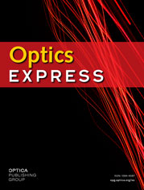
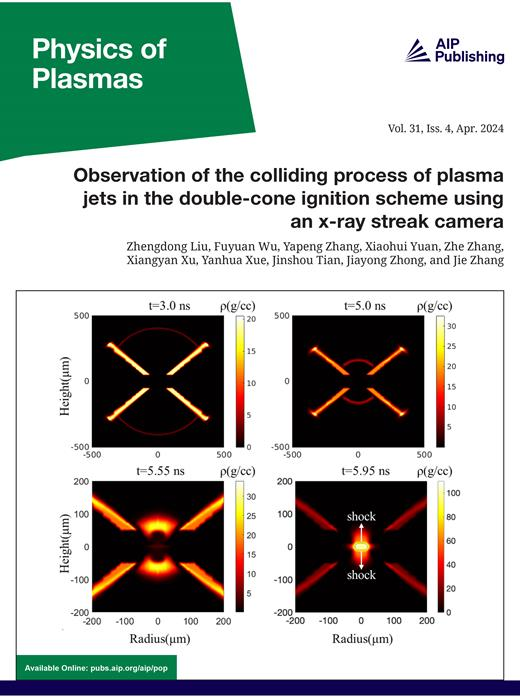
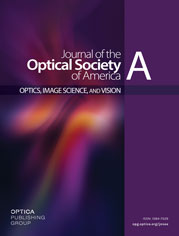
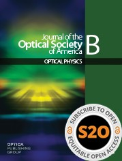
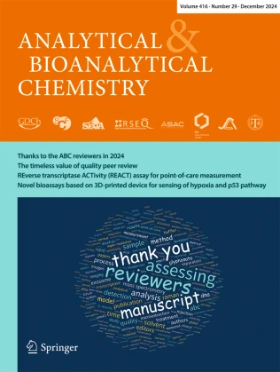

Turning experiments into shared understanding





AK Tarai, S Sangiri, LK Pampana, SK Shukla, V Akondi, "Feature engineering with neural network in Shack-Hartmann wavefront sensing", Journal of the Optical Society of America A, 43(7), pp. D64-D74, 2026. [Link]
AK Tarai, NC Dingari, MK Gundawar, "Challenges in sorting unknown post-consumer plastics using LIBS combined with machine learning", Journal of the Optical Society of America B, 43(8), pp. B34-B40, 2026. [Link]
R Junjuri, AK Tarai, MK Gundawar, "Classification of human tooth using laser-induced breakdown spectroscopy combined with machine learning", Journal of Optics, 53(4), pp. 3810-3820, 2024. [Link]
LM John, AK Tarai, MK Gundawar, A KK, "Self-absorption of emission lines in picosecond-laser-produced gold plasmas", Physics of Plasmas, 31(4), pp. 043302, 2024. [Link]
V Gupta, AK Rai, T Kumar, AK Tarai, M Kumar Gundawar, AK Rai, "Calibration-free approaches for quantitative analysis of a brass sample", Zeitschrift für Naturforschung A, 79(6), pp. 557-566, 2024. [Link]
AK Tarai, SA Rashkovskiy, MK Gundawar, "Simplified LIBS-based intensity-ratio approach for concentration estimation (SLICE): an approach for elemental analysis using laser induced breakdown spectroscopy", Optics Express, 32(4), pp. 6540-6554, 2024. [Link]
B John, G Joseph, A G, MK Gundawar, AK Tarai, N Shaji, GP Joseph, "l-valine refines bis(thiourea) cadmium chloride single crystals for optoelectronic applications", Journal of Materials Science: Materials in Electronics, 35(2), pp. 135, 2024. [Link]
AK Tarai, R Junjuri, A Dhobley, MK Gundawar, "Classification of human tooth using laser-induced breakdown spectroscopy combined with machine learning", Journal of Optics, 53(4), pp. 3810-3820, 2023. [Link]
V Gupta, AK Rai, T Kumar, A Tarai, GMK Gundawar, AK Rai, "Compositional analysis of copper and iron-based alloys using LIBS coupled with chemometric method", Analytical Sciences, 40(1), pp. 53-65, 2023. [Link]
Z Gazali, V Gupta, T Kumar, R Kumar, AK Tarai, PK Rai, MK Gundawar, AK Rai, "Effect of mineral elements on the formation of gallbladder stones using spectroscopic techniques", Analytical and Bioanalytical Chemistry, 415(25), pp. 6279-6289, 2023. [Link]
AK Tarai, MK Gundawar, "Raman spectroscopy combined with machine learning for the quantification of explosives in mixtures", Journal of Optics, 53(1), pp. 1382-1390, 2023. [Link]
V Gupta, AK Rai, R Kumar, AK Tarai, MK Gundawar, AK Rai, "Compositional quantification of binary ternary and quaternary metallic alloy-based coins using laser-induced breakdown spectroscopy", Journal of Optics, 52(3), pp. 1245-1257, 2023. [Link]
AK Tarai, R Junjuri, SA Rashkovskiy, MK Gundawar, "Time-dependent intensity ratio-based approach for estimating the temperature of laser produced plasma", Applied Spectroscopy, 76(11), pp. 1300-1306, 2022. [Link]
D Dubey, R Kumar, V Gupta, AK Tarai, MK Gundawar, AK Rai, "Investigation of Hazardous Materials in Firecrackers using LIBS Coupled with a Chemometric Method and FTIR Spectroscopy", Defence Science Journal, 72(4), pp. 618-626, 2022. [Link]
P Mishra, R Kumar, AK Tarai, M Kumar, AK Rai, "Characterization of toxic substances present in smoking tobacco using different spectroscopic techniques", Journal of Laser Applications, 34(2), 2022. [Link]
AK Tarai, R Junjuri, MK Gundawar, "Advances in applications of LIBS in India: A Review", Asian Journal of Physics, 30(6), pp. 871–888, 2021. [Link]
AK Tarai, MK Gundawar, "Possibility of Plastic Discrimination using Picosecond Laser Induced Breakdown Spectroscopy", 2022 Workshop on Recent Advances in Photonics (WRAP), pp. 1-2, IEEE, 2022. [Link]
R Junjuri, AK Tarai, A Dhobley, MK Gundawar, "Identification of the calcified tissues using laser induced breakdown spectroscopy", 2019 Workshop on Recent Advances in Photonics (WRAP), pp. 1-3, IEEE, 2019. [Link]
AK Tarai, R Junjuri, MK Gundawar, "LIBS Applications in Forensic Dentistry: Predictive Modelling for Sex and Age Determination from Human Tooth", Laser Induced Breakdown Spectroscopy (LIBS) Chemometrics, Environmental and Forensic Applications, Cham: Springer Nature Switzerland, pp. 501-516, 2025. [Link]
R Junjuri, AK Tarai, MK Gundawar, "Integrating LIBS and Machine Learning: A Dynamic Approach to Plastic Classification in Waste Recycling", Laser Induced Breakdown Spectroscopy (LIBS) Chemometrics, Environmental and Forensic Applications, Cham: Springer Nature Switzerland, pp. 405-419, 2025. [Link]
MK Gundawar, AK Tarai, R Junjuri, "Beyond Peaks and Noise: The Power of Machine Learning in LIBS Analysis", Laser Induced Breakdown Spectroscopy (LIBS) Chemometrics, Environmental and Forensic Applications, Cham: Springer Nature Switzerland, pp. 299-316, 2025. [Link]
Paper Presentation (Oral), "Simplified LIBS-based Intensity-Ratio Approach for Concentration Estimation (SLICE): An Approach for Elemental Analysis using Laser Induced Breakdown Spectroscopy", KVRSS Research Awards 2024-25 (Bhoutikam), Dr. K. V. Rao Scientific Society, Hyderabad, India, 2025.
Thesis Presentation (Oral), "Development of a novel LIBS based Technique for Elemental Analysis and Harnessing Machine Learning for Real-time Applications using LIBS and Raman Spectroscopy", National Photonics Symposium (NPS 2025), CUSAT, Kerala, India, 2025.
Poster Presentation, "Laser induced breakdown spectroscopy combined with machine learning: An efficient tool for plastic waste sorting", Frontiers in Physics (FIP 2023), University of Hyderabad, India, 2023.
Poster Presentation, "Effect of feature selection and extraction in identification of post-consumer plastics using picosecond laser induced breakdown spectroscopy", XII World Conference on Laser Induced Breakdown Spectroscopy (LIBS 2022), Bari, Italy, 2022.
Poster Presentation, "Quantitative estimation of ammonium nitrate in mixtures using portable Raman spectroscopy", 13th International High Energy Materials Conference & Exhibits (HEMCE 2022), TBRL, Chandigarh, India, 2022.
Poster Presentation, "Possibility of Plastic Discrimination using Picosecond Laser Induced Breakdown Spectroscopy", 5th IEEE Workshop on Recent Advances in Photonics (WRAP 2022), Mumbai, India [Virtual], 2022.
Contributed Oral Presentation, "Estimation of radiation decay constant of laser produced brass plasma from its emission intensities", 47th IEEE International Conference on Plasma Science (ICOPS 2020), Singapore [Virtual], 2020.
Poster Presentation, "Standoff detection of explosives using laser induced breakdown spectroscopy", 12th International High Energy Materials Conference & Exhibits (HEMCE 2019), IIT Madras, Chennai, India, 2019.
Last updated: 15/05/2026